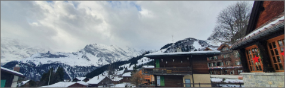

|  | |||
|---|---|---|---|
| 스위스 | 스위스 인터라켄 라우터브루넨 뮈렌마을 | ||
| 유럽여행 | 인터라켄 | 여행추천 | 스위스만큼 기차 시스템이 잘돼 있는 나라도 드물다. 나라 곳곳으로 실핏줄처럼 철로가 촘촘히 깔려 있어 기차가 통과하지 않는 지역이 거의 없을 정도다. 워낙 호수가 많고 알프스산맥도 지나가다 보니 특별한 구간이 아님에도 창밖 풍경 자체만으로도 여행길이 무척 즐겁다. 그중 루체른과 생갈렌의 그림 같은 풍경을 오가며 ‘프리 알파인 익스프레스(Pre-Alpine Express)’로도 불리는 ‘보랄펜 익스프레스(Voralpen Express)’, 루체른부터 몽트뢰 구간을 달리는 화려한 가을빛 정취가 환상적인 ‘골든패스 라인(Golden Pass Line)’, 체르마트에서부터 생모리츠까지 알프스의 숨 막힐 듯한 전경이 펼쳐지는 ‘빙하 특급(Glacier Express)’은 전 세계 여행자가 꼭 한 번 타보고 싶어 하는 기차여행의 로망이다. |
| 여행시간 | 5시간 | 여행일자 | 2022. 12. 22 |
라우터브루넨에서 가파른 절벽 위에 세워진 마을 ‘뮈렌’(Mu‥rren·1661m)까지 가는 코스와 벵겐에서 33번 하이킹 코스가 유명한 ‘멘을리헨’(Ma‥nnlichen·2343m)으로 가는 여정도 추천할 만한 기차여행 코스다. 곤돌라 탑승 시간이나 기·종착지가 개방되는 시점은 계절마다 다르니 방문 전 반드시 확인이 필요하다.